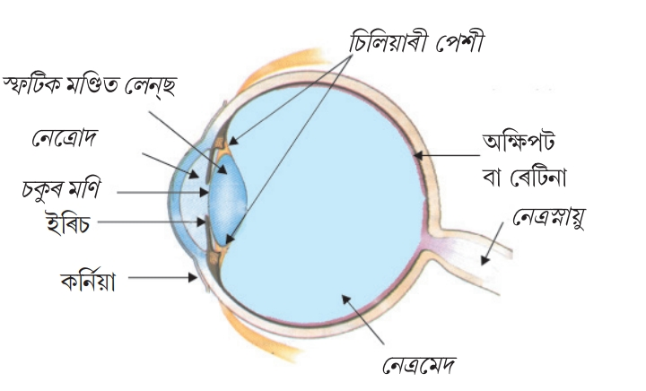
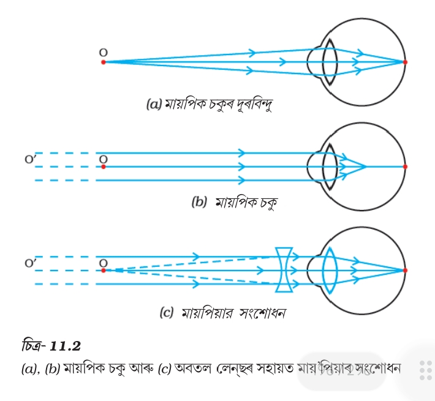
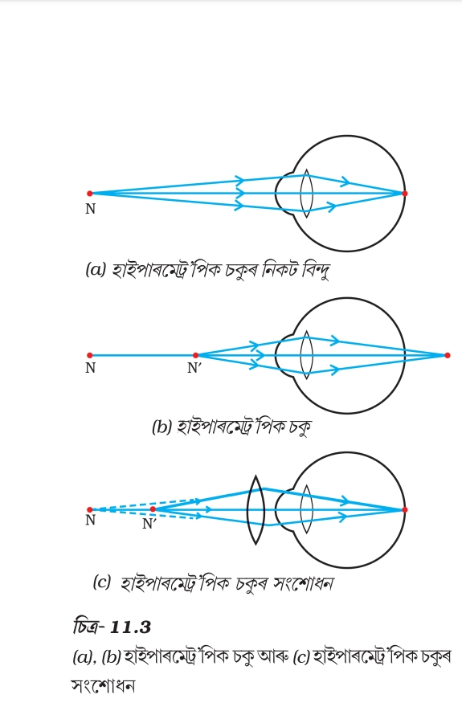
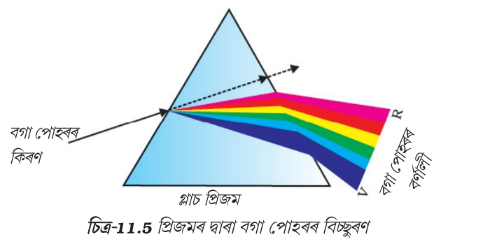
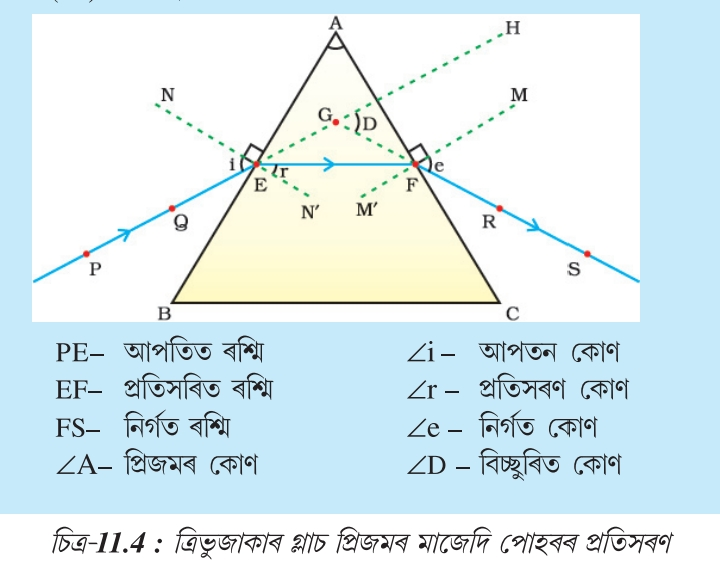

১. দৃষ্টিশক্তিৰ সংজ্ঞা (Definition of Vision)
দৃষ্টি (Vision): যি জৈৱিক প্ৰক্ৰিয়াৰ দ্বাৰা জীৱই পোহৰৰ সহায়ত চাৰিওফালৰ বস্তুবোৰৰ আকৃতি, আকাৰ, ৰং আৰু অৱস্থান অনুভৱ কৰিব পাৰে, তাকে দৃষ্টিশক্তি বা দৃষ্টি বোলে। চকু হ'ল এই দৃষ্টি অনুভৱ কৰা মূল ইন্দ্ৰিয় অংগ।
২. মানুহৰ চকুৰ সংজ্ঞা, গঠন আৰু পোহৰ-সংবেদী কোষ (Rods and Cones)
মানুহৰ চকু (Human Eye): মানুহৰ চকু এটা কেমেৰাৰ দৰে কাম কৰা প্ৰাকৃতিক অপ্টিকেল যন্ত্ৰ, যাৰ ব্যাসাৰ্ধ (Radius of human eye) প্ৰায় 2.3 cm হয়।
চকুৰ বিভিন্ন অংশসমূহ:
- কৰ্ণিয়া (Cornea): চকুৰ সন্মুখৰ স্বচ্ছ আৰু পাতল স্বচ্ছ আৱৰণ, যাৰ মাজেৰে পোহৰ চকুৰ ভিতৰলৈ প্ৰৱেশ কৰে। চকুৰ প্ৰায় সৰহভাগ পোহৰ প্ৰতিসৰণ কৰিয়েই কৰ্ণিয়াই কাম আৰম্ভ কৰে।
- আইৰিছ (Iris): কৰ্ণিয়াৰ পিছফালে থকা এটা ডাঠ পেশীযুক্ত ৰঙীন আৱৰণ। ই মানুহৰ চকুৰ ৰং (যেনে ক’লা, নীলা, বাদামী) নিৰ্ধাৰণ কৰে আৰু তাৰাৰ আকাৰ নিয়ন্ত্ৰণ কৰে।
- পিপিল বা চকুৰ মনি (Pupil): আইৰিছৰ মাজত থকা সৰু বিন্ধা বা ছিদ্ৰ, যাৰ মাজেৰে পোহৰৰ পৰিমাণ নিয়ন্ত্ৰিত হয়। পোহৰ বেছি হ'লে তাৰ আকাৰ সৰু হয় আৰু পোহৰ কম হ'লে ডাঙৰ হয়।
- লেন্টিকুলাৰ লেঞ্চ বা স্ফটিকীয় লেন্স (Crystalline Lens): ই এটা স্বচ্ছ আৰু নমনীয় জেলি সদৃশ পদাৰ্থৰে গঠিত উত্তল লেন্স, যিয়ে বস্তৰ প্ৰতিবিম্ব ৰেটিনাত গঠন কৰে।
- চিলাৰী পেশী (Ciliary Muscles): এই পেশীসমূহে লেন্সৰ বক্ৰতা সলনি কৰি ফ’কাচ দৈৰ্ঘ্য পৰিৱৰ্তন কৰাত সহায় কৰে।
- ৰেটিনা (Retina): চকুৰ আটাইতকৈ ভিতৰৰ পৰা আৱৰি থকা পৰ্দা য’ত প্ৰতিবিম্ব গঠিত হয়। ইয়াত পোহৰ-সংবেদী কোষ থাকে।
- অপটিক স্নায়ু (Optic Nerve): ৰেটিনাত উৎপন্ন হোৱা সংকেতসমূহ মগজুলৈ প্ৰেৰণ কৰে, যিয়ে পিছত আমাক প্ৰতিবিম্বটো পোনকৈ দেখাত সহায় কৰে।
ৰড কোষ আৰু ক’ন কোষ (Rods and Cones in Retina):
- ৰড কোষ (Rod Cells): এইবোৰ সুতা বা দণ্ড সদৃশ কোষ যিয়ে কম পোহৰত (মৃদু পোহৰ বা আন্ধাৰত) দেখা পোৱাত সহায় কৰে। কিন্তু এইবোৰে ৰং চিনি নাপায়।
- ক’ন কোষ (Cone Cells): এইবোৰ শংকু সদৃশ কোষ যিয়ে উজ্জ্বল পোহৰত কাম কৰে আৰু বিভিন্ন ৰং তথা বস্তুৰ সূক্ষ্ম পুংখানুপুংখ বিৱৰণ (Colour vision) চিনি পোৱাত সহায় কৰে।
- নেত্ৰ ৰস বা নেত্ৰুদো (Aqueous Humor): কৰ্ণিয়া আৰু লেন্সৰ মাজৰ ঠাইত থকা স্বচ্ছ তৰল পদাৰ্থ, যিয়ে চকুৰ সন্মুখৰ অংশক পুষ্টি যোগায় আৰু সঠিক চাপ বনাই ৰাখে।
- নেত্ৰ মেড বা ভিট্ৰিয়াছ হিউমাৰ (Vitreous Humor): লেন্স আৰু ৰেটিনাৰ মাজৰ অংশত তৰল, যিয়ে চকুৰ আকৃতি ঠিক ৰাখে আৰু পোহৰ প্ৰতিসৰণত সহায় কৰে।

চিত্ৰঃ মানুহৰ চকু
৩. চকুৰ উপযোজন ক্ষমতা (Power of Accommodation of Eye)
সংজ্ঞা: চকুৰ চিলিয়াৰী পেশীৰ সংকোচন আৰু প্ৰসাৰণৰ দ্বাৰা ইয়াৰ স্ফটিকীয় লেন্সৰ ফ’কাচ দৈৰ্ঘ্য কম বা বেছি কৰি ওচৰৰ বা দূৰত্বৰ বস্তুবোৰ স্পষ্টকৈ দেখা পোৱাৰ ক্ষমতাকে চকুৰ উপযোজন ক্ষমতা বোলে।
বস্তু ওচৰলৈ আনিলে চিলিয়াৰী পেশী সংকুচিত হয় আৰু লেন্স ডাঠ হৈ ফ’কাচ দৈৰ্ঘ্য হ্ৰাস পায়, আকৌ বস্তু দূৰলৈ গ’লে পেশী শিথিল হৈ লেন্স পাতল হয় আৰু ফকাছ দৈৰ্ঘ্য বৃদ্ধি পায়।
৪. নিকট বিন্দু আৰু দূৰ বিন্দু (Near Point and Far Point)
- নিকট বিন্দু (Near Point / Least Distance of Distinct Vision): চকুৱে পৰিষ্কাৰকৈ দেখা পাব পৰা আটাইতকৈ ওচৰৰ দূৰত্বক নিকট বিন্দু বোলে। সুস্থ মানুহৰ বাবে এই দূৰত্ব হ'ল প্ৰায় 25 cm।
- দূৰ বিন্দু (Far Point): চকুৱে কোনো কষ্ট নোহোৱাকৈ স্পষ্টকৈ দেখা পাব পৰা আটাইতকৈ দূৰৰ বিন্দু বা অসীম দূৰত্বকে দূৰ বিন্দু বোলে। সুস্থ মানুহৰ বাবে এই দূৰত্ব অসীম (Infinity) হয়।
৫. নিকট দৃষ্টি গ্ৰস্ততা বা মাইওপিয়া (Myopia / Short-sightedness)
সংজ্ঞা: যি দৃষ্টি দোষত মানুহজনে ওচৰৰ বস্তু স্পষ্টকৈ দেখা পায় কিন্তু নিৰ্দিষ্ট দূৰত্বৰ (অসীমৰ পৰিবৰ্তে কম দূৰত্বৰ) দূৰৰ বস্তু স্পষ্টকৈ দেখা নাপায়, তাকে মাইওপিয়া বোলে।
কাৰণসমূহ:
- চকুৰ লেন্সৰ ফ’কাচ দৈৰ্ঘ্য অত্যাধিক হ্ৰাস পোৱা ।
- চকুৰ গোলাকৃতি (Eyeball) দীঘল হৈ যোৱা।
ইয়াৰ ফলত দূৰৰ বস্তুৰ প্ৰতিবিম্ব ৰেটিনাৰ অলপ আগতে গঠিত হয়।
প্ৰতিকাৰ বা সংশোধনী: এই দোষ দূৰ কৰিবলৈ উপযুক্ত ক্ষমতাৰ অৱতল লেন্স (Concave Lens)যুক্ত চশমা ব্যৱহাৰ কৰা হয়, যিয়ে প্ৰতিবিম্বটো পুনৰ ৰেটিনাত গঠন কৰাত সহায় কৰে।

চিত্ৰঃ নিকট দৃষ্টি গ্ৰষ্টতা
৬. দূৰ দৃষ্টি গ্ৰস্ততা বা হাইপাৰমেট্ৰোপিয়া (Hypermetropia / Long-sightedness)
সংজ্ঞা: যি দৃষ্টি দোষত মানুহজনে দূৰৰ বস্তু স্পষ্টকৈ দেখা পায় কিন্তু ওচৰৰ বস্তু (25 cm তকৈ ওচৰৰ) স্পষ্টকৈ দেখা নাপায়, তাকে হাইপাৰমেট্ৰোপিয়া বোলে।
কাৰণসমূহ:
- চকুৰ লেন্সৰ ফ’কাচ দৈৰ্ঘ্য বৃদ্ধি পোৱা
- চকুৰ গোলাকৃতি সৰু হৈ যোৱা।ইয়াৰ ফলত ওচৰৰ বস্তুৰ প্ৰতিবিম্ব ৰেটিনাৰ পিছফালে গঠিত হয়।
প্ৰতিকাৰ বা সংশোধনী: এই দোষ দূৰ কৰিবলৈ উপযুক্ত ক্ষমতাৰ উত্তল লেন্স (Convex Lens)যুক্ত চশমা ব্যৱহাৰ কৰা হয়।

চিত্ৰঃ দূৰ দৃষ্টি গ্রস্ততা
৭. প্ৰেছবায়’পিয়া (Presbyopia)
সংজ্ঞা: বয়স বৃদ্ধি হোৱাৰ লগে লগে চকুৰ চিলিয়াৰী পেশী দুৰ্বল হৈ পৰা আৰু লেন্সৰ নমনীয়তা হ্ৰাস পোৱাৰ ফলতে ওচৰৰ বস্তু স্পষ্টকৈ দেখা নোপোৱা অৱস্থাটোকে প্ৰেছবায়’পিয়া বোলে (সাধাৰণতে বয়স্থ লোকৰ হয়)।
কাৰণ আৰু প্ৰতিকাৰ: চিলিয়াৰী পেশীৰ কাৰ্যক্ষমতা হ্ৰাস পোৱাৰ বাবে হয়। ইয়াৰ সংশোধনীৰ বাবে দ্বি-ফ’কেল লেন্স (Bifocal Lens - য'ত ওপৰত অৱতল আৰু তলত উত্তল লেন্স থাকে) ব্যৱহাৰ কৰা হয়।
৮. চকুৰ দৃষ্টি ক্ষেত্ৰ (Field of View of Human Eye)
সংজ্ঞা: মানুহৰ দুয়োটা চকু খোলা অৱস্থাত একেলগে যিমান পৰিসৰৰ ঠাই বা বস্তু দেখা পায়, তাকে দৃষ্টি ক্ষেত্ৰ বোলে। এজন সুস্থ মানুহৰ দুয়োটা চকুৰ দ্বাৰা আনুভূমিক দৃষ্টি ক্ষেত্ৰ প্ৰায় 150° ৰ পৰা 180° হয়। একক চকুৱে প্ৰায় 150° দেখুৱায়, কিন্তু দুটা চকু থকাত ত্রিমাত্ৰিক (3D) গভীৰতা অনুভৱ কৰা যায়।
৯. মানুহৰ এটা মাত্র চকু থাকিলে কি হ’লহেঁতেন? (What if Human had One Eye?)
যদি মানুহৰ এটা মাত্ৰ চকু থাকিলহেঁতেন, তেন্তে তলৰ সমস্যাবোৰ হ'লহেঁতেন:
- দৃষ্টি ক্ষেত্ৰ কমি গ’লহেঁতেন: এটা চকুৰ দৃষ্টি ক্ষেত্ৰ প্ৰায় 150° হয়, যি দুটা চকুৰ 180° তকৈ কম।
- ত্রিমাত্ৰিক (3D) দৃষ্টি হেৰুৱালেহেঁতেন: বস্তুৰ দূৰত্ব, গভীৰতা বা উচ্চতা সঠিকভাৱে অনুভৱ কৰিব নোৱাৰিলেহেঁতেন (কেৱল দ্বিমাত্ৰিক বা 2D ৰূপ দেখা পালেহেঁতেন)।
১০. চকু দান (Eye Donation )
চকু দান কি? মৃত্যুৰ পিছত নিজৰ চকু দুটা দান কৰা যাতে অন্ধত্বত ভুগি থকা কোনো ব্যক্তিয়ে কৰ্ণিয়াৰ প্ৰতিৰোপণৰ (Corneal transplantation) জৰিয়তে পুনৰ পোহৰ দেখিবলৈ পায়।
- যিকোনো বয়সৰ বা লিংগৰ ব্যক্তিয়ে চকু দান কৰিব পাৰে (যেনে চশমা পিন্ধা বা ডায়েবেটিচ থকা লোকেও)।
- মৃত্যুৰ ৪ৰ পৰা ৬ ঘণ্টাৰ ভিতৰত চকু সংগ্ৰহ কৰিব লাগে।
- চকু দানৰ দ্বাৰা সংগ্ৰাহিত কৰ্ণিয়াই কৰ্ণিয়াজনিত অন্ধতা থকা লোকক নতুন দৃষ্টি দিব পাৰে।
১১. কেটেৰেক্ট
সংজ্ঞা: চকুৰ ভিতৰতো দুগ্ধ সদৃশ হৈ দেখা পোৱাত অসুবিধা হোৱাকে কেটেৰেক্ট বা চকুত্ ছানি পৰা বুলি কয় ।
১২. পোহৰৰ বিচ্ছুৰণ আৰু নিউটনৰ ডিস্ক (Dispersion of Light and Newtonian Disk)
পোহৰৰ বিচ্ছুৰণ (Dispersion of Light): বগা পোহৰ (যেনে সূৰ্যৰ পোহৰ) প্ৰিজমৰ মাজেৰে পাৰ হৈ যোৱাৰ সময়ত ইয়াৰ উপাদান সুকীয়া সুকীয়া সাতটা ৰঙত (VIBGYOR: বেঙুনীয়া, গাঢ় নীলা, নীলা, সেউজীয়া, হালধীয়া, কমলা, ৰঙা) বিভক্ত হৈ পৰা পৰিঘটনাকে পোহৰৰ বিচ্ছুৰণ বোলে।
নিউটনৰ ডিস্ক (Newton's Disk): চাৰ আইজাক নিউটনে এটা বৃত্তাকাৰ ডিস্কত সমানুপাতিকভাৱে পোহৰৰ সাতটা ৰং আঁকি তাক দ্ৰুত গতিত ঘূৰাই দেখুৱাইছিল যে সাতটা ৰং মিহলি হৈ আকৌ বগা পোহৰ উৎপন্ন হয়। ই প্ৰমাণ কৰে যে বগা পোহৰ আচলতে সাতটা ৰঙৰ মিশ্ৰণ।

চিত্ৰঃ পোহৰৰ বিচ্ছুৰণ
১৩. কাঁচৰ প্ৰিজমৰ মাজেৰে পোহৰৰ প্ৰতিসৰণ (Refraction through a Glass Prism)
প্ৰিজমৰ মাজেৰে প্ৰতিসৰণ: কাঁচৰ প্ৰিজম এটাৰ দুখন হেলনীয়া প্ৰতিসৰক পৃষ্ঠ থাকে। যেতিয়া পোহৰৰ ৰশ্মি প্ৰিজমৰ মাজেৰে পাৰ হৈ যায়, তেতিয়া ই প্ৰথমে লঘুটৰ মাধ্যমৰ পৰা ঘনতৰ মাধ্যমলৈ (কৰ্ণিয়া/কাঁচ) প্ৰৱেশ কৰোঁতে অভিলম্বৰ কাষলৈ আহে আৰু পিছত ঘনতৰ মাধ্যমৰ পৰা লঘোতৰ মাধ্যমলৈ ওলাই যাওঁতে অভিলম্বৰ পৰা আঁতৰি যায়।
বিচ্যুতি কোণ (Angle of Deviation - $\delta$): আপতিত ৰশ্মি আৰু প্ৰতিসৰণৰ ফলত ওলাই যোৱা নির্গত ৰশ্মিৰ (Emergent ray) মাজৰ কোণকে চ্যুতিকোণ বোলে।

চিত্ৰঃ প্ৰিজমৰ মাজেৰে প্ৰতিসৰণ
১৪. পোহৰৰ বিচ্ছুৰণ আৰু নিউটনৰ প্ৰিজম পৰীক্ষা (Dispersion & Newton's Prism Experiment)
বিচ্ছুৰণ (Dispersion): বগা পোহৰ প্ৰিজমৰ মাজেৰে পাৰ হৈ যাওঁতে ইয়াৰ উপাদান সাতটা ৰঙত (VIBGYOR: বেঙুনীয়া, গাঢ় নীলা, নীলা, সেউজীয়া, হালধীয়া, কমলা, ৰঙা) বিভক্ত হোৱাকে পোহৰৰ বিচ্ছুৰণ বোলে।
নিউটনৰ প্ৰিজম পৰীক্ষা: চাৰ আইজাক নিউটনে প্ৰথম প্ৰিজম ব্যৱহাৰ কৰি বগা পোহৰক সাতটা ৰঙলৈ বিভক্ত কৰিছিল। ইয়াৰ পিছত তেও দ্বিতীয় এটা একেধৰণৰ প্ৰিজম ওলোটাকৈ বহুৱাই দেখুৱালে যে সেই সাতটা ৰং পুনৰ একত্ৰিত হৈ আকৌ বগা পোহৰলৈ ৰূপান্তৰিত হয়। ই প্ৰমাণ কৰিলে যে বগা পোহৰ নিজেই সাতটা ৰঙৰ মিশ্ৰণ।
১৫. VIBGYOR ৰ তৰংগদৈৰ্ঘ্য আৰু বায়ুমণ্ডলীয় কণাৰ লগত সংঘাত (Wavelengths and Interaction with Particles)
- ৰঙা ৰং (Red): আটাইতকৈ বেছি তৰংগদৈৰ্ঘ্য (Longest Wavelength) থকাৰ বাবে বায়ুমণ্ডলৰ কণাসমূহৰ দ্বাৰা কম সিঁচৰিত বা বিক্ষেপন হয় আৰু দূৰৈৰ পৰা স্পষ্টকৈ দেখা যায় (সেয়ে বিপদ সংকেতত ব্যৱহাৰ হয়)।
- বেঙুনীয়া আৰু নীলা ৰং (Violet & Blue): আটাইতকৈ কম তৰংগদৈৰ্ঘ্য (Shortest Wavelength) থকাৰ বাবে বায়ুমণ্ডলৰ সূক্ষ্ম কণাসমূহৰ দ্বাৰা সৰ্বাধিক সিঁচৰিত বা বিক্ষেপণ হয়।
১৬. আভ্যন্তৰীণ পূৰ্ণ প্ৰতিফলন আৰু সংকট কোণ (Total Internal Reflection & Critical Angle)
সংকট কোণ (Critical Angle - $C$): পোহৰ ৰশ্মি যেতিয়া ঘনতৰ মাধ্যমৰ পৰা লঘুটোৰ মাধ্যমলৈ যায়, তেতিয়া আপতন কোণৰ যি নিৰ্দিষ্ট মানৰ বাবে প্ৰতিসৰণ কোণ 90° হয়, তাকে সংকট কোণ বোলে।
আভ্যন্তৰীণ পূৰ্ণ প্ৰতিফলন (Total Internal Reflection - TIR): আপতন কোণৰ মান সংকট কোণতকৈ বেছি হ’লে পোহৰ ৰশ্মি লঘোঁতৰ মাধ্যমলৈ নাযায় বৰঞ্চ সম্পূৰ্ণৰূপে পুনৰ ঘনতৰ মাধ্যমলৈ ঘূৰি আহে। এই পৰিঘটনাকে আভ্যন্তৰীণ পূৰ্ণ প্ৰতিফলন বোলে।
উদাহৰণ: হীৰাৰ উজ্জ্বলতা আৰু মৰীচিকা (Mirage) সৃষ্টি হোৱা।
১৭. ৰামধেনু সৃষ্টি (Rainbow Formation)
ৰামধেনু হ'ল বৰষুণৰ পিছত আকাশত দেখা পোৱা এক প্ৰাকৃতিক বৰ্ণালী। ই মূলত বায়ুমণ্ডলত থকা সৰু সৰু পানীৰ টোপালবোৰৰ দ্বাৰা সূৰ্যৰ পোহৰৰ প্ৰতিসৰণ, বিচ্ছুৰণ আৰু আভ্যন্তৰীণ পূৰ্ণ প্ৰতিফলনৰ যুটীয়া ক্ৰিয়াৰ ফলত সৃষ্টি হয়। পানীৰ টোপালে প্ৰিজমৰ দৰে কাম কৰি বগা পোহৰক সাতটা ৰঙত বিভক্ত কৰে।
১৮. বায়ুমণ্ডলীয় প্ৰতিসৰণ, তৰাৰ চিকমিকনি আৰু গ্ৰহৰ চিকমিকনি নোহোৱাৰ কাৰণ (Atmospheric Refraction & Twinkling)
বায়ুমণ্ডলীয় প্ৰতিসৰণ (Atmospheric Refraction): পৃথিৱীৰ বায়ুমণ্ডলৰ ঘনত্ব বিভিন্ন স্তৰত ভিন্ন হোৱাৰ বাবে পোহৰৰ ৰশ্মি ক্ৰমান্বয়ে বেঁকা হৈ গতি কৰা পৰিঘটনাকে বায়ুমণ্ডলীয় প্ৰতিসৰণ বোলে।
- তৰাৰ চিকমিকনি (Twinkling of Stars): তৰাবোৰ পৃথিৱীৰ পৰা বহুত দূৰত থকাত বিন্দু সদৃশ পোহৰৰ উৎস হিচাপে থাকে। বায়ুমণ্ডলৰ ঘনত্ব অহৰহ সলনি হোৱাৰ বাবে তৰাৰ পোহৰৰ প্ৰতিসৰণ সলনি হয় আৰু গতিপথ সলনি হয়, যাৰ ফলত তৰাবোৰ চিকমিকাই উঠা বা লৰচৰ কৰা যেন লাগে।
- গ্ৰহবোৰ কিয় চিকমিকাই নেথাকে? (Why Planets Do Not Twinkle?): গ্ৰহবোৰ পৃথিৱীৰ বহুত ওচৰত থাকে আৰু সেইবোৰক বহুতো বিন্দু উৎসৰ সমষ্টি বুলি ধৰিব পাৰি। ফলত সকলো বিন্দুৰ পৰা অহা পোহৰৰ গড় প্ৰভাৱ শূন্য হৈ পৰে আৰু চিকমিকনিৰ প্ৰভাৱ নষ্ট হৈ যায়।
১৯. পোহৰৰ বিক্ষেপন আৰু টিণ্ডেল প্ৰভাৱ (Scattering of Light & Tyndall Effect)
পোহৰৰ বিক্ষেপন (Scattering of Light): পোহৰৰ ৰশ্মি বায়ুমণ্ডলৰ মাজেৰে পাৰ হৈ যাওঁতে ধূলিকণা বা গেছৰ অণুৰ দ্বাৰা চাৰিওফালে বিয়পি পৰাৰ প্ৰক্ৰিয়াক বিক্ষেপন বোলে।
টিণ্ডেল প্ৰভাৱ (Tyndall Effect): কলয়েড দ্ৰৱণ বা ধূলিময় বায়ুমণ্ডলৰ মাজেৰে পোহৰৰ ৰশ্মি পাৰ হৈ যাওঁতে পোহৰৰ পথটো দৃশ্যমান হৈ পৰাৰ পৰিঘটনাকে টিণ্ডেল প্ৰভাৱ বোলে (যেনে ঘন জংঘলৰ মাজেৰে সূৰ্যৰ পোহৰৰ ৰশ্মি পৰা দেখা পোৱা)।
২০. অগ্ৰিম সূৰ্যোদয় আৰু পলম সূৰ্যাস্ত, আৰু মহাকাশচাৰীৰ বাবে আকাশ ক’লা দেখা পোৱাৰ কাৰণ
- অগ্ৰিম সূৰ্যোদয় আৰু পলম সূৰ্যাস্ত (Advance Sunrise and Delayed Sunset): সূৰ্য আচলতে দিগন্তৰ তলত থাকিলেও বায়ুমণ্ডলীয় প্ৰতিসৰণৰ বাবে সূৰ্য ৰ পোহৰ বাৰে বাৰে প্ৰতিসৰণ ঘটি গতিপথ বেঁকা হোৱাৰ ফলত আমি প্ৰকৃত সূৰ্যোদয়ৰ প্ৰায় ২ মিনিট আগতে আৰু সূৰ্যাস্তৰ ২ মিনিট পিছলৈকে সূৰ্যটোক দেখা পাওঁ (মুঠ ৪ মিনিট অতিৰিক্ত দিনৰ পোহৰ পোৱা যায়)।
- মহাকাশচাৰীৰ বাবে আকাশ ক’লা কিয় দেখা যায়? (Why Sky Appears Dark to Astronaut): মহাকাশত কোনো বায়ুমণ্ডল বা বায়ুৰ কণা নাথাকে, যাৰ ফলত পোহৰৰ বিক্ষেপন(Scattering) নঘটে। সেইবাবে মহাকাশচাৰীয়ে আকাশখন ক’লা দেখে।
২১. Home Work: সূৰ্যোদয় আৰু সূৰ্যাস্ত সময়ত সূৰ্য টো ৰঙচুৱা কিয় দেখা পোৱা যায়?